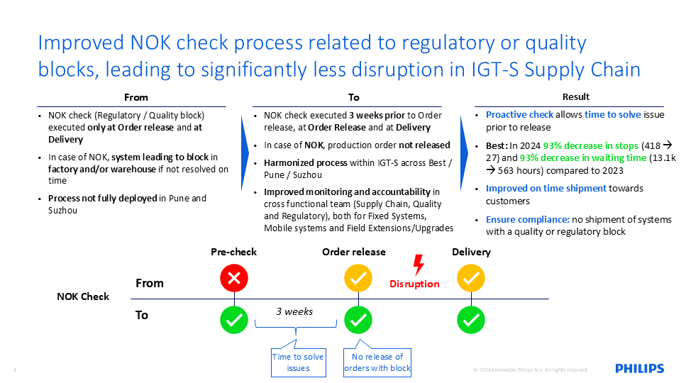

Case Studies
NOK Check Process Transformation – Supply Chain Compliance (IGT-S)
In global MedTech supply chain operations, late identification of regulatory or quality blocks was causing production stoppages and shipment delays. Within the Image-Guided Therapy Systems (IGT-S) organization at :contentReference[oaicite:0]{index=0}, NOK (Non-Quality) checks were historically performed only at order release and delivery stages, resulting in reactive issue handling.
A cross-functional initiative involving Supply Chain, Quality, and Regulatory teams under leadership coordination by Preeti Sharma implemented a structured NOK Check process across Best (Netherlands), Pune, and Suzhou sites.
Previous State
• NOK checks performed only at order release and delivery stages
• Late identification of regulatory/quality blocks causing disruptions
• Limited harmonization across global manufacturing sites
Improved Process
• NOK checks introduced 3 weeks prior to order release, at release, and at delivery
• Early identification of regulatory and quality blocks before production release
• Standardized global process across Best, Pune, and Suzhou
• Strengthened cross-functional accountability (Supply Chain, Quality, Regulatory)
Led cross-functional coordination and implementation of the NOK Check process across global sites, ensuring operational consistency, compliance alignment, and execution discipline.
• Improved on-time shipment performance to customers
• Reduced supply chain disruptions through proactive issue detection
• Strengthened compliance by preventing shipment of blocked materials
• Established a scalable global governance process
Enabled a proactive supply chain control mechanism that improved end-to-end execution reliability and reduced operational delays across global manufacturing operations.

Supply Chain Analytics Dashboard – Power BI Decision Support System
Lack of consolidated visibility into key performance indicators across business and supply chain functions led to fragmented reporting and delayed decision-making.
Developed an interactive Power BI dashboard to consolidate business metrics and enable structured decision-making through visual analytics.
Strengthened data-driven decision-making by enabling consolidated visibility of business performance metrics.
Power BI · Data Modeling · KPI Design · Business Intelligence · Supply Chain Analytics